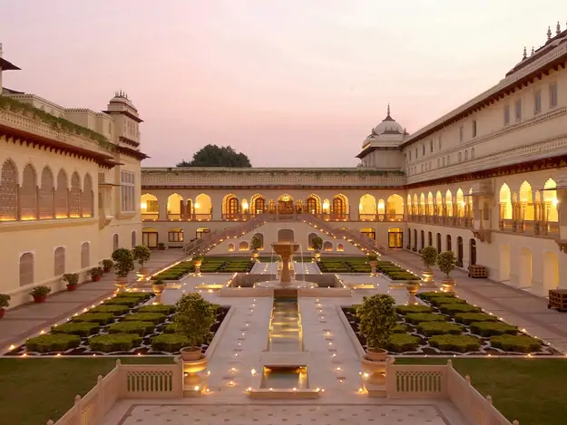

Jaipur The Pink City
Jaipur is the capital of India’s Rajasthan state. It evokes the royal family that once ruled the region and that, in 1727, founded what is now called the Old City, or “Pink City” for its trademark building color. At the center of its stately street grid stands the opulent, colonnaded City Palace complex. With gardens, courtyards and museums, part of it is still a royal residence.
Jaipur is the largest city in Rajasthan and was built in the eighteenth century by Sawai Jai Singh as India's first planned city. Jaipur is a major tourist attraction amongst Indian as well as international travellers. It belongs to the tourist Golden Triangle of Delhi, Jaipur and Agra. It hosts several attractions like the City Palace, Govind Dev ji Temple, Vidhan Sabha, Birla Temple, several massive Rajput forts and so on. It also serves as a stepping stone for travelers heading to the desert cities of Jodhpur and Jaisalmer.
